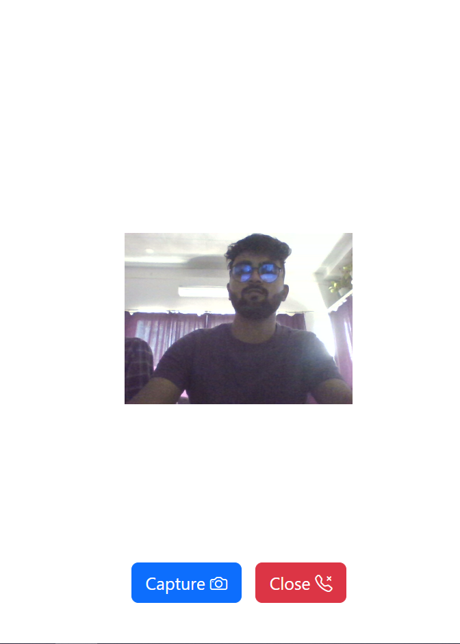
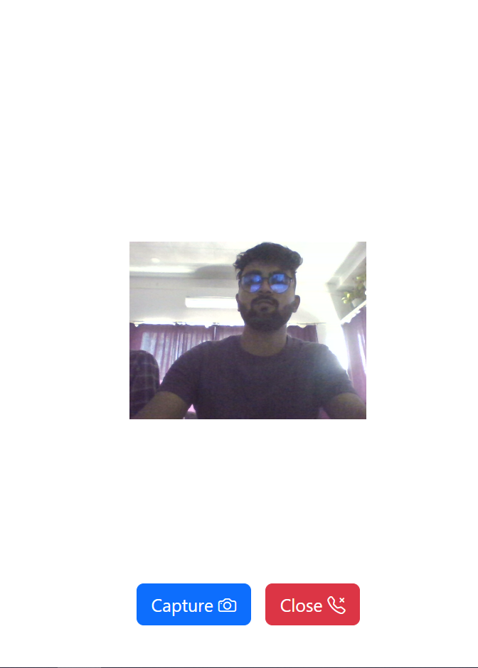

PWA Camera
the Camera futere of our progressive web app aprovides user with an esey way to captuer special moments.
the Camera futere of our progressive web app aprovides user with an esey way to captuer special moments.

 


I'm self motivated and passionate about web development and coding . I'm constantly learning and exploring new technologies and trends.I'm a team player and I'm very organized and detail oriented.
I'm committed to delivering quality code and I take pride in my work.I strive to build user friendly, efficient and robust applications.I'm also a problem solver and I'm able to think outside the box to come up with solutions.